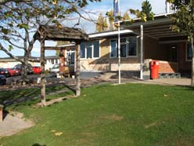

Fairfield School
Fairfield School visits have been a small part of my role this year. Prior to my Community Profile I had never been into a school since I left six years ago. I regularily visited Fairfield School on Friday lunchtimes.
My first visit (after a meeting with the Principal and Deputy Principal) consisted of going through the classes and introducing myself. Then on Friday lunchtime I took the Earthball and ran some games with the young people. Over the next three terms I caught up with the Year 8 teacher and formed a strong network with the school.
I enjoyed visiting the school and found that it was enough to just turn up on Friday lunchtimes and play the odd game of ball tag. I found that after a term of hanging out many of the young people, especially the boys, would come over and share all sorts of things about their week with me.
Over my time at the school the teachers allowed me to do Evaluations For Transformation (EFT) with members of the class and they also recommended a student for me to mentor over the year. I learnt how just being myself around young people can be very effective. I didn't have to organise any activities or games, all I had to do was be available.
The highlight of the visits was during the EFT two young people shared some stories about how they were experiencing bullying at school and in the community. I was able to share some of my experiences with bullying with the young people and then as they left one of the them turned back and said, "it's been really good to be able to talk about this stuff" and then went back to class.